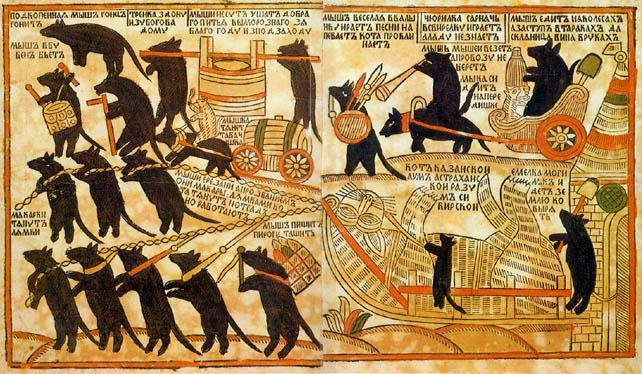
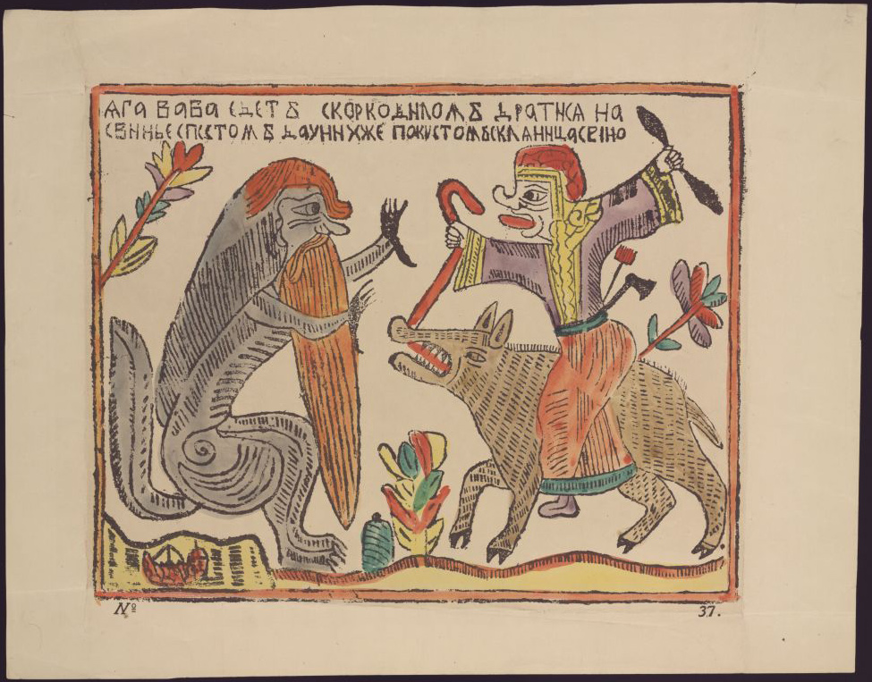
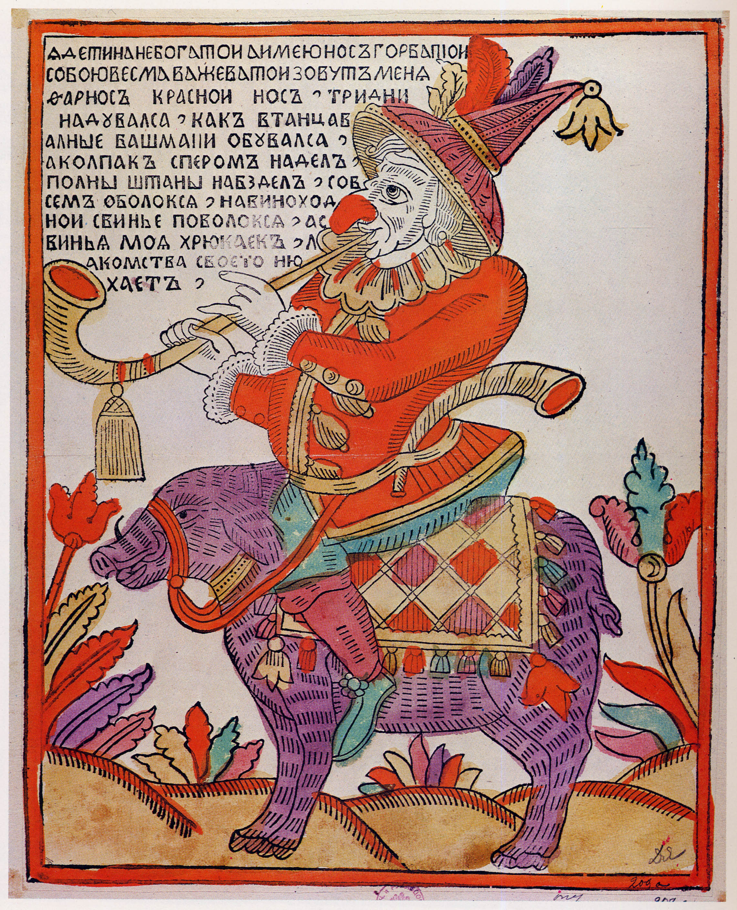

Потешный лист, ставший первым массовым медиа в России.
Листайте вниз ↓
Лубо́к (лубочная картинка, потешный лист, простовик) — вид графики, изображение с подписью, отличающееся простотой и доступностью образов. В эпоху, когда книги были непомерно дороги и доступны лишь избранным, именно лубок стал главным источником информации, развлечения и политической сатиры для простого народа.
Его конфликт — это противостояние «высокой» культуры дворцов и «низовой» культуры улиц. Лубок высмеивал пороки, рассказывал новости, пугал концом света и учил грамоте. Это был интернет, телевизор и комикс XVII–XIX веков, объединенные в одном бумажном листе.

Материалы предоставлены из фондов Отдела эстампов Российской национальной библиотеки (Санкт-Петербург).


Технология создания лубка была трудоемкой. Изначально мастера вырезали изображение на липовых досках (лубе), затем наносили краску и делали оттиск на бумаге. Позже контур стали раскрашивать от руки яркими анилиновыми красками в специальных артелях.
Появление первых печатных листов в России. Техника: ксилография (гравюра на дереве). Основная тематика — религиозная (иконы на бумаге).
Петр I вводит моду на светские сюжеты. Появляются "потешные листы" с сатирой, новостями, модами, азбуками. Переход к гравюре на меди, что позволило делать более тонкий рисунок.
Золотой век лубка. Появление литографии (печать с камня). Огромные тиражи. Возникновение артелей "цветочниц" (женщин, раскрашивавших листы в деревнях). Лубок проникает в каждую крестьянскую избу.
Упадок традиционного лубка с развитием типографского дела и фотографии. Однако стилистика лубка перерождается в советском агитационном плакате (Окна РОСТА).
Потяните ползунок, чтобы увидеть, как черно-белый оттиск превращался в готовый лубок после работы артелей-раскрасчиков.